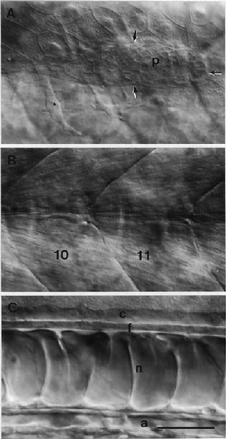

Modified from: Kimmel et al., 1955. Developmental Dynamics 203:253-310. Copyright © 1995 Wiley-Liss, Inc. Reprinted only by permission of Wiley-Liss, a subsidiary of John Wiley & Sons, Inc.
Fig. 34. The posterior lateral line primordium, and underlying structures along the flank of the pharyngula. Left side Nomarski views, dorsal to the top, anterior to the left. Three focal planes at the same position are shown: A: The lateral line primordium (p), outlined by arrows, is in focus most superficially. The right-most arrow shows its posterior, leading, boundary that we use to obtain the prim stage. Out-of-focus transverse myosepta are visible (compare with B, where they are in sharp focus). They mark off myotomes 10 and 11, that fill most of the field, and the anterior-most part of myotome 12, present the far right. Myotome 12 underlies the leading edge of the lateral line primordium, hence the embryo is at the prim-12 stage (28 h). The embryis slightly tipped so that the focus at the top of the field is more superficial, and the focal plane to the bottom is deeper. At the top, periderm cells are present. These flattened cells, developing from the EVL, have a characteristic cobblestone appearance, with their most superficial face uplifted into fine folds or rugae. The star shows one of two mesenchymal cells present in the ventral part of the field. They lie deep the periderm, as does the primordium itself. B: Myotomes (10 and 11) are in focus. Cross-striations are apparent. The horizontal myoseptum crosses the field of view at the center, the muscle cells at this location, muscle pioneers, are horizontally flattened such that they look thinner from this viewpoint. Other fibers, those more dorsally and ventrally, run obliquely across the myotome, pointing towards the chevron apex. C: The focus is at the midline, deep the myotomes. From top to bottom the following structures are visible; the spinal cord's central canal (c) and floor plate (f), the notochord (n), and the dorsal aorta (a). Scale bar: 50 µm.

Figure 34